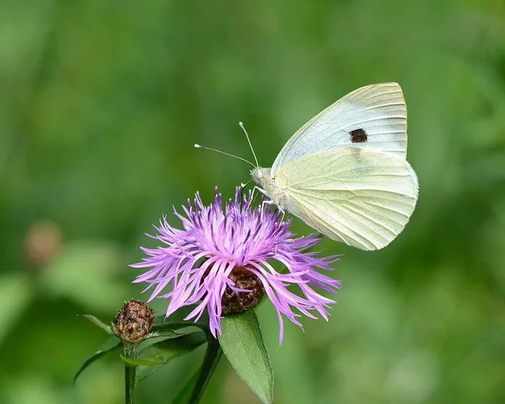
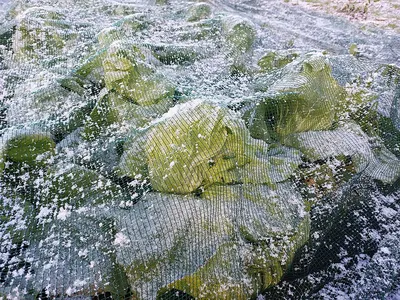
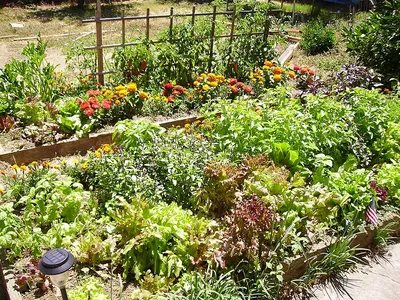
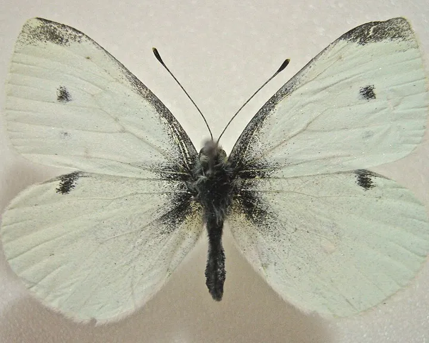

Großer Kohlweißling
Pieris brassicae
SchädlingeSpannweite 5–6,5 cmtagaktiv
Beet & GemüseBlüten
Weißer Schmetterling mit schwarzen Flügelspitzen, dessen Raupen in Gruppen Kohl kahl fressen. Im Juli und August legt die zweite Generation ihre gelben Eipakete an den Kohl.
SchädlingSeine Raupen fressen Kohl bis auf die Rippen
So erkennst du den Großer Kohlweißling
- Weiß mit großen schwarzen Flügelspitzen
- Weibchen mit zwei schwarzen Punkten auf dem Vorderflügel
- Raupen gelbgrün mit schwarzen Punkten, in Gruppen
Auch zu finden unter: Weißer Schmetterling · Grüne Raupe
- Aktiv
- tagaktiv
Wann ist der Großer Kohlweißling zu sehen?
kaum zu sehenaktivbeste Zeit
Aktiv: April, Mai, Juni, Juli, August, September und Oktober. Hauptzeit: Juli und August.
Großer Kohlweißling ist von April bis Oktober zu sehen. Besonders viel los ist im Juli und August. Im Juli und August legt die zweite Generation ihre gelben Eipakete an den Kohl.
Typisches Schadbild: Kohl bis auf die Rippen abgefressen.
Lebensweise
Was frisst er?
Die Raupen fressen Kohl, Kohlrabi und Kapuzinerkresse. Die Falter trinken Nektar.
Eier
Das Weibchen klebt Gruppen von 20 bis 100 gelben, flaschenförmigen Eiern an die Blattunterseite.
Gut zu wissen
Die Raupen nehmen Senföle aus dem Kohl auf und schmecken deshalb vielen Vögeln nicht.
Sanft vorbeugen
Kohl gleich nach dem Pflanzen mit einem engmaschigen Kulturschutznetz abdecken. Gelbe Eipakete an den Blattunterseiten abstreifen.
Früh erkennen
Wenn du Weißlinge um den Kohl flattern siehst, in den nächsten Tagen die Blattunterseiten absuchen.
Passend dazu
- Beispielfoto · Foto: Schlaghecken Josef, CC BY-SA 4.0 – Lizenzangaben im Bildnachweis

Kulturschutznetz
Auswahl bei Amazon
Ein feines Netz über Kohl und Möhren hält Kohlweißling, Kohlfliege und Möhrenfliege ab.
Bei Amazon ansehen Kulturschutznetz (Werbelink, öffnet in neuem Fenster) - Beispielfoto · Foto: Srl, CC BY-SA 3.0 – Lizenzangaben im Bildnachweis

Unser TippHochbeet aus Holz
Auswahl bei Amazon
Rückenschonend gärtnern, und mit einer Schneckenkante kommen Nacktschnecken kaum noch an Salat und Gemüse.
Bei Amazon ansehen Hochbeet aus Holz (Werbelink, öffnet in neuem Fenster) Ratgeber: Schnecken ohne Gift
Werbelink: Wenn du über diesen Link etwas kaufst, erhält der Gartentierkompass eine kleine Provision von Amazon. Für dich ändert sich am Preis nichts. Als Amazon-Partner verdiene ich an qualifizierten Verkäufen.

Nicht verwechseln: Kleiner Kohlweißling
Der Große Kohlweißling hat große schwarze Flügelspitzen und Raupen in Gruppen.
Foto: Ypna (Quelle, öffnet in neuem Fenster), CC BY-SA 3.0 (Lizenztext, öffnet in neuem Fenster), Wikimedia Commons
Großer Kohlweißling oder Kleiner Kohlweißling? Alle Unterschiede
Mehr erfahren
- Wikipedia: Großer Kohlweißling (öffnet in neuem Fenster)
- Beobachtungen bei iNaturalist (öffnet in neuem Fenster)
- Vögel im Garten im Vogelkompass
Von Nico Schober · Stand: 10. November 2026 · Angaben abgeglichen mit Wikipedia und gängiger Bestimmungsliteratur